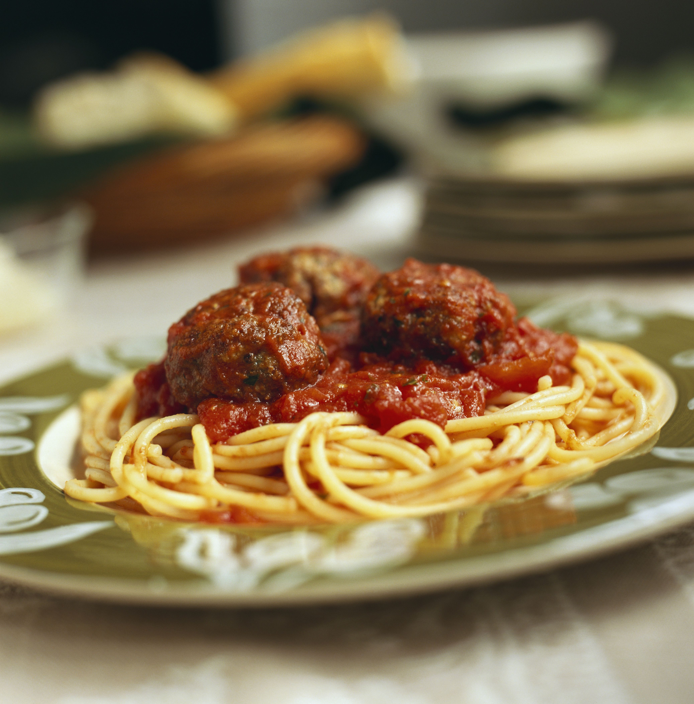

Spaghetti and Meatballs

Plate of spaghetti and meatballs in sauce
This is an Italian-style pasta sauce with homemade meatballs that's cooked
slowly over low heat for an intense tomato flavor. It's easy to make the
spaghetti sauce ahead of time; gently reheat and add meatballs 30 minutes
before you're ready to serve with your favorite pasta.
Ingredients
The Meatballs
- Ground beef
- Bread crumbs
- Parsley
- Parmesan cheese
- Black pepper
- Garlic powder
- Egg
The Sauce
- Garlic
- Onion
- Tomatoes
- Salt
- Sugar
- Bay leaf
Steps
-
Combine ground beef, bread crumbs, parsley, Parmesan, black pepper,
garlic powder, and egg in a bowl.
-
Form into meatballs. Store, covered, in the refrigerator until ready to
use.
-
In a large saucepan, combine garlic, onion, tomatoes, salt, sugar, and a
bay leaf. Simmer those ingredients for 90 minutes.
-
Add tomato paste, basil, pepper, and the meatballs to the sauce. Simmer
for an additional 30 minutes (or until meatballs are cooked).
- Serve over cooked spaghetti.